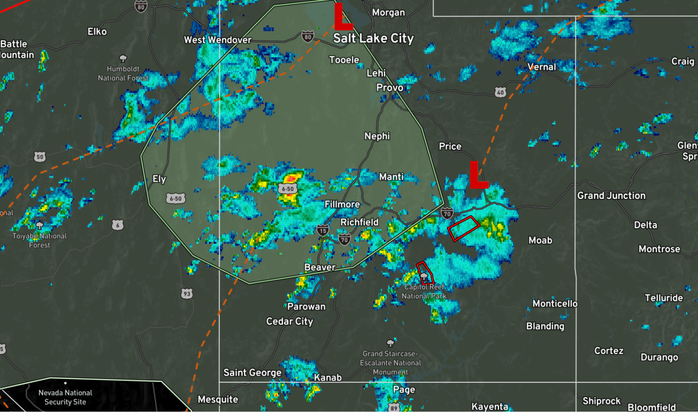
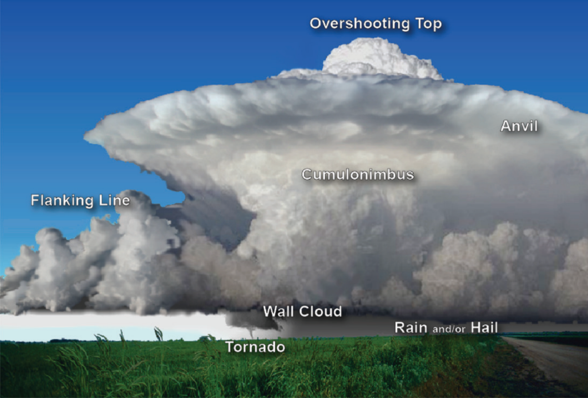
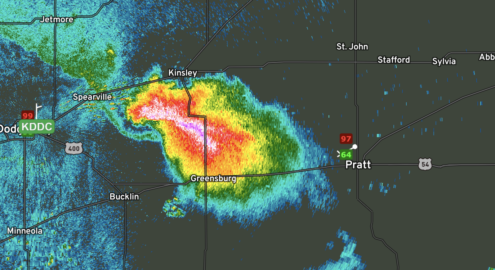
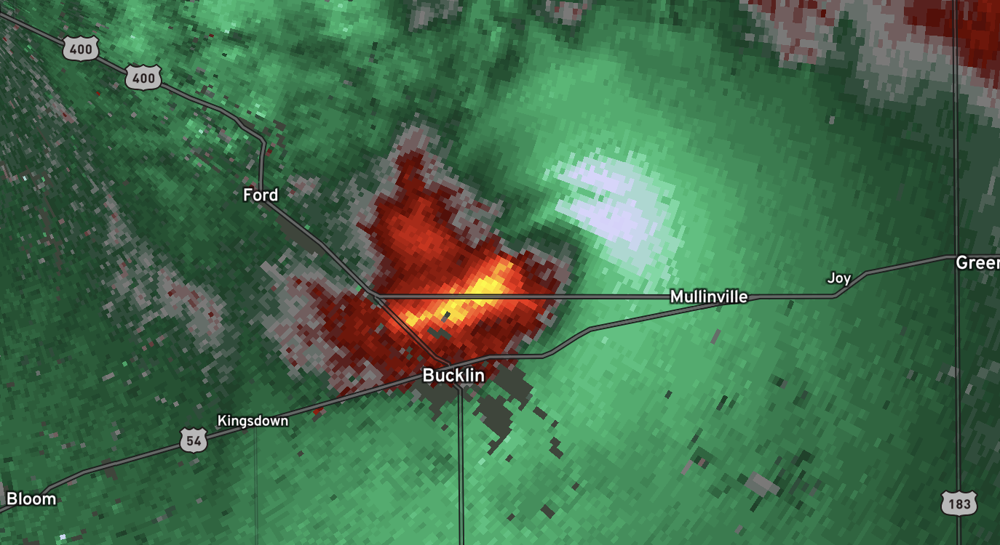

Now detecting weather
- Rain: On radar imagery, rain appears as areas of relatively uniform and widespread reflectivity. The intensity of rainfall is indicated by higher reflectivity values. Light rain is represented by lower reflectivity values, while heavier rain is depicted by brighter colors on the radar display.
- Hail: Hail is typically associated with strong updrafts within thunderstorms. On radar, hail appears as intense reflectivity values with a distinct core of high reflectivity, often characterized by bright colors such as red or purple. The presence of a hail core within a storm cell indicates the potential for hailfall.

- Snow: Snowfall is generally detected as low-level reflectivity with relatively low values compared to rain or hail. Snow can be identified by its characteristic appearance on radar imagery, often exhibiting a less uniform and more scattered pattern compared to rain.
- Supercells and Tornadoes:
- Supercells: Supercell thunderstorms are characterized by their organized and persistent rotation. Radar signatures associated with supercells include:

- Hook Echo: A hook-shaped appendage extending from the main reflectivity area, indicating the presence of a mesocyclone and the potential for tornado formation.
- Mesocyclone: A rotating updraft within a thunderstorm, which can be identified by a circulation pattern in Doppler velocity data, showing adjacent areas of strong inbound and outbound velocities.
- Tornadoes: The radar signatures associated with tornadoes include:
- Debris Ball: A reflectivity signature indicating the presence of airborne debris picked up by a tornado. It appears as a localized area of high reflectivity, often located near the ground.
- Tornado Vortex Signature (TVS): A Doppler velocity pattern showing a strong rotational circulation within a storm, indicative of a tornado. The TVS appears as a couplet of strong inbound and outbound velocities in close proximity.
- Storm Cells and Derechos:
- Storm Cells: Storm cells are individual convective cells within a larger weather system. They can be identified by their distinctive radar characteristics, including:
- High Reflectivity: Storm cells exhibit areas of high reflectivity, often with irregular shapes and varying intensities, indicating regions of enhanced precipitation.
- Motion and Speed: Tracking the movement and speed of storm cells helps determine their potential impact and the direction they are moving.

- Derechos: Derechos are widespread, long-lived wind events associated with a bow echo structure. Key radar features of derechos include:
- Bow Echo: A bow-shaped radar reflectivity pattern, indicating the presence of strong and damaging winds.
- Rear Inflow Notch: A notch or indentation on the rear side of the bow echo, indicating the inflow of strong winds into the storm system.
- Wind Convergence and Divergence: Areas of wind convergence and divergence can be identified by examining radar data for the convergence or divergence of wind vectors. These patterns indicate regions where winds are coming together or spreading apart, respectively.
- Velocity Gradient: Look for regions on Doppler velocity data where there is a notable change in wind speed or direction. Sharp changes in velocity over a short distance suggest strong wind shear or rotation within a storm.
By carefully examining radar imagery and understanding the radar signatures associated with different weather phenomena, meteorologists can effectively detect and recognize various weather patterns and hazards. It is important to note that radar interpretation should be done in conjunction with other weather data and expertise to ensure accurate weather detection and prediction.